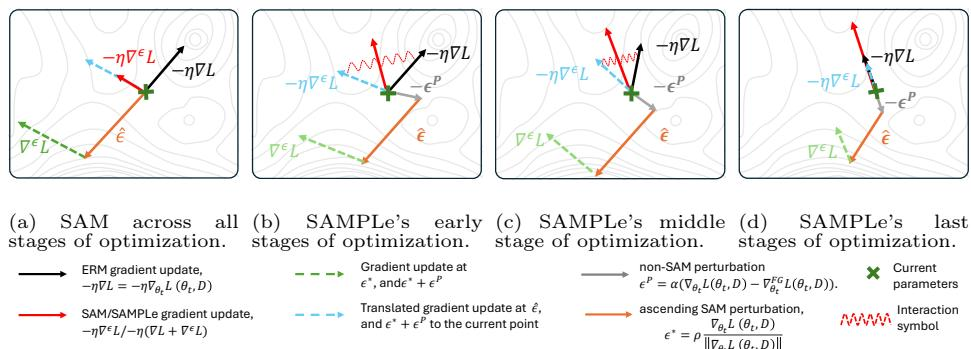

arXiv new; ECCV main; VLM prompt learning optimizer · P1 · 2026-07-09
SAMPLe：通用视觉表征常通过 prompt/adaptation 使用，这篇给出保留 CLIP/VLM 泛化的一条优化层路径
作为 plug-in optimizer 接入 CoOp、CoCoOp、MaPLe、TCP 和 Co-Prompt，目标是缓解 prompt learning 在 seen/unseen 分布间的泛化损失。
编号2607.05727
优先级P1
类别arXiv new; ECCV main; VLM prompt learning optimizer
会议arXiv new; ECCV main; VLM prompt learning optimizer
方法SAMPLe 是 Sharpness-Aware Minimization Prompt Learning：在 prompt 更新时考虑局部曲率和梯度性质，在探索/利用之间动态平衡。
来源arXiv / OpenReview
先说结论。通用视觉表征常通过 prompt/adaptation 使用，这篇给出保留 CLIP/VLM 泛化的一条优化层路径。 作为 plug-in optimizer 接入 CoOp、CoCoOp、MaPLe、TCP 和 Co-Prompt，目标是缓解 prompt learning 在 seen/unseen 分布间的泛化损失。


核心问题
通用视觉表征常通过 prompt/adaptation 使用，这篇给出保留 CLIP/VLM 泛化的一条优化层路径。
方法拆解
SAMPLe 是 Sharpness-Aware Minimization Prompt Learning：在 prompt 更新时考虑局部曲率和梯度性质，在探索/利用之间动态平衡。
主要贡献
作为 plug-in optimizer 接入 CoOp、CoCoOp、MaPLe、TCP 和 Co-Prompt，目标是缓解 prompt learning 在 seen/unseen 分布间的泛化损失。
实验看点
摘要称在多种 prompt learning 框架和多样设置下稳定优于现有优化器。
局限与读法
方法主要作用在下游 prompt tuning，不改变 VLM 预训练数据或表示目标；需要看 base-to-novel、domain shift 和少样本稳定性细节。